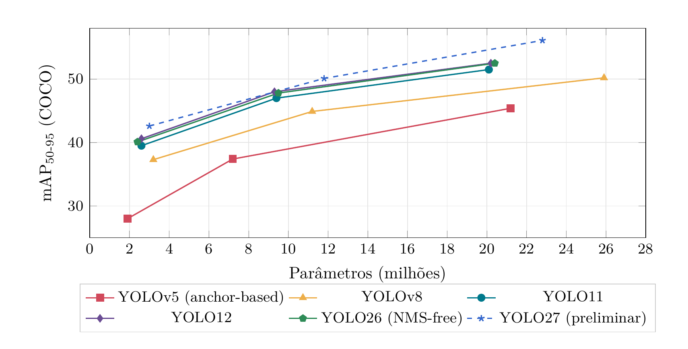

Estudo da família YOLO¶
Evolução YOLOv5 → YOLOv8 → YOLO11 e escolha do modelo para o P1
- Equipe: Equipe Titans
- Projeto: Rover — Protótipo 1 (P1)
- Responsáveis: Luiz, Roberto, Thomas
- Data: 3 de novembro de 2026
Sumário¶
- 1. Evolução arquitetural
- 2. Conceitos de métricas e formato do dataset
- 3. Tabela comparativa
- 4. Recomendação para o Protótipo 1
- 5. Próximos passos
- Referências
- Histórico de versões
1. Evolução arquitetural¶
As três versões seguem a mesma divisão em três partes. O backbone extrai características da imagem em resoluções decrescentes. O neck combina mapas de escalas diferentes (caminhos FPN e PAN) para representar bem objetos pequenos e grandes. A head faz as previsões finais em três escalas (P3, P4 e P5, com redução de 8, 16 e 32 vezes). De uma versão para outra, o que mais muda é o bloco repetido do backbone e do neck (C3 → C2f → C3k2), o formato da head e a forma de escolher, no treino, quais previsões contam como acerto [10].
flowchart TB
img["Imagem<br>640 × 640"] --> bb
subgraph bb["Backbone: extrai características"]
stem["Stem (conv)"] --> b3["P3 · ÷8<br>80 × 80"]
b3 --> b4["P4 · ÷16<br>40 × 40"]
b4 --> b5["P5 · ÷32<br>20 × 20"]
b5 --> sppf["SPPF<br>(+ C2PSA no YOLO11)"]
end
subgraph nk["Neck: combina as escalas"]
fpn["FPN: desce de P5 a P3<br>upsample + concat"] --> pan["PAN: sobe de P3 a P5<br>downsample + concat"]
end
subgraph hd["Head: prevê caixas e classes"]
h3["P3<br>objetos pequenos"]
h4["P4<br>objetos médios"]
h5["P5<br>objetos grandes"]
end
bb -- "mapas P3, P4 e P5" --> nk
nk -- "mapas P3, P4 e P5" --> hd
hd --> nms["NMS"] --> out["Detecções finais"]Figura 1: Estrutura comum ao YOLOv5, YOLOv8 e YOLO11. Cada etapa do backbone e do neck usa o bloco repetido da versão (C3, C2f ou C3k2). O neck recebe os mapas das três escalas: desce de P5 para P3 (FPN), levando contexto às escalas finas, e depois sobe de volta (PAN), levando detalhe às escalas grossas. Cada escala tem a sua head.
- YOLOv5 → YOLOv8: o bloco C2f concatena as saídas de todos os gargalos internos, não só a última, o que melhora o fluxo de gradiente. A head ganha ramos separados para classe e caixa, perde o objectness e abandona os anchors. As previsões positivas passam a ser escolhidas pelo Task-Aligned Assigner, que combina a pontuação da classe com o IoU da caixa prevista. A regressão ganha a DFL (Distribution Focal Loss), que trata cada lado da caixa como uma distribuição em vez de um número só [11].
- YOLOv8 → YOLO11: o C3k2 substitui o C2f. É uma variante cujo bloco interno pode ser um gargalo simples ou um bloco C3k, com tamanho de kernel configurável. Depois do SPPF entra o C2PSA, um bloco de atenção espacial que ajuda o modelo a focar nas regiões relevantes da imagem [10], [17]. A head e a perda continuam as do YOLOv8. O resultado é um modelo mais enxuto: o YOLO11m tem 22% menos parâmetros que o YOLOv8m e mAP maior no COCO [6].
Tabela 1: Visão geral das mudanças por versão.
| Versão | Backbone / neck | Head | Loss / atribuição | Pós-proc. |
|---|---|---|---|---|
| YOLOv5 (2020) | CSPDarknet com C3; stem conv 6 × 6; SPPF; neck PANet | Acoplada, baseada em anchors (3/célula), com objectness | BCE (obj + cls) + CIoU; atribuição por razão de forma | NMS |
| YOLOv8 (2023) | Blocos C2f; stem conv 3 × 3; SPPF; neck PANet com C2f | Desacoplada, anchor-free, sem objectness | BCE + CIoU + DFL; Task-Aligned Assigner | NMS |
| YOLO11 (2024) | Blocos C3k2; SPPF + C2PSA (atenção espacial) | Desacoplada, anchor-free; ramo de classe com convs depthwise | Igual ao YOLOv8 | NMS |
| YOLO12 (2025) | C3k2 nos estágios iniciais; A2C2f (Area Attention + R-ELAN) em P4/P5 e no neck | Igual ao YOLO11 | Igual ao YOLOv8 | NMS |
| YOLO26 (2026) | Igual ao YOLO11 (C3k2, SPPF, C2PSA) | Anchor-free, sem DFL; head one-to-one (end-to-end) | ProgLoss + STAL; otimizador MuSGD | NMS-free |
| YOLO27 (2026*) | n/s: CNN simplificada, prediz em 2 escalas*(não 3); m: backbone estilo YOLO26 + decoder transformer | n/s: one-to-many + one-to-one opcional; m: baseada em queries | Não divulgada; n/s têm ramo de alinhamento de foreground só no treino | n/s: NMS‡ m: NMS-free |
* Anunciado em 13/09/2026; ainda sem pesos, sem suporte no pacote ultralytics e sem data de lançamento. ‡ NMS por padrão; NMS-free com nms=False.
1.1 Da detecção por anchors à head anchor-free¶
Como o YOLOv5 usa anchors. Cada célula da grade, em cada escala, recebe três caixas de referência com proporções fixas, os anchors. A rede não prevê a caixa diretamente: prevê ajustes de posição e de escala sobre cada anchor, mais a probabilidade de haver um objeto ali (objectness). No treino, um objeto anotado só é atribuído aos anchors cuja forma se parece com a dele.
Problemas dessa abordagem:
- Os anchors são hiperparâmetros ligados ao dataset. Os do COCO não necessariamente servem para os objetos do ERC e precisam ser recalculados por agrupamento (k-means) das caixas anotadas.
- Várias previsões por célula geram muito mais caixas candidatas, o que pesa no NMS.
- A atribuição por semelhança de forma é fixa e ignora a qualidade real da previsão.
Como funciona a head anchor-free do YOLOv8 e do YOLO11. Cada ponto da grade prevê diretamente as distâncias até os quatro lados da caixa (esquerda, topo, direita e base), cada uma como uma distribuição treinada com DFL. Não há caixas de referência nem ramo de objectness, e as previsões positivas são escolhidas dinamicamente pelo Task-Aligned Assigner [11].
flowchart TB
%% O Mermaid desenha o último bloco à esquerda: o YOLOv8 vem primeiro aqui
subgraph v8["YOLOv8 e YOLO11: head desacoplada, anchor-free"]
b0["Mapa de características<br>(uma escala)"] --> b1["Ramo de caixa"]
b0 --> b2["Ramo de classe"]
b1 --> b3["Distâncias até os 4 lados<br>(distribuições, DFL)"]
b2 --> b4["Pontuação por classe"]
b3 & b4 -. "só no treino" .-> b5["Task-Aligned Assigner<br>(classe × IoU)"]
end
subgraph v5["YOLOv5: head acoplada, com anchors"]
a0["Mapa de características<br>(uma escala)"] --> a1["Um único conv 1 × 1"]
a1 --> a2["Para cada um dos 3 anchors:<br>ajuste de x, y, w, h<br>+ objectness + classes"]
a2 -. "só no treino" .-> a3["Atribuição por<br>semelhança de forma"]
endFigura 2: O que a head prevê em cada ponto da grade, em uma escala. A atribuição (linha tracejada) só acontece no treino e decide quais previsões contam como positivas.
Vantagens para o rover:
- Menos hiperparâmetros: não é preciso recalcular anchors a cada dataset novo.
- Melhor generalização para objetos com formas que não aparecem no COCO, como sondas, ferramentas e componentes de painel.
- Menos previsões por imagem: NMS mais rápido e pós-processamento mais simples de portar para ONNX, NCNN ou TensorRT.
- Treino mais estável, porque a escolha dos positivos acompanha a qualidade das previsões.
Evidência numérica. A Ultralytics publicou o YOLOv5u, que mantém o backbone e o neck do YOLOv5, mas troca a head pela head anchor-free e sem objectness do YOLOv8 [12].
Tabela 2: Efeito da head anchor-free no YOLOv5s (COCO val2017, entrada 640 × 640).
| Modelo | Head | Params (M) | GFLOPs | mAP₅₀₋₉₅ |
|---|---|---|---|---|
| YOLOv5s [1] | Baseada em anchors | 7,2 | 16,5 | 37,4 |
| YOLOv5su [12] | Anchor-free | 9,1 | 24,0 | 43,0 |
Note
A troca de head veio junto com o pipeline de treino do pacote ultralytics, então parte dos +5,6 pontos também vem do treino. Mesmo assim, é a comparação mais direta do efeito da head anchor-free, e ela custa cerca de 45% a mais de FLOPs.
1.2 Trade-offs entre as variantes nano, small e medium¶
Tabela 3: Variantes n/s/m (COCO val2017, entrada 640 × 640). Latências em ms. Fontes: [1], [2], [3], [4], [5], [6].
| Versão | Modelo | Params (M) | GFLOPs | mAP₅₀₋₉₅ | CPU | GPU | No rover |
|---|---|---|---|---|---|---|---|
| YOLOv5ᵃ | YOLOv5n | 1,9 | 4,5 | 28,0 | 45 | 6,3 | [–] |
| YOLOv5s | 7,2 | 16,5 | 37,4 | 98 | 6,4 | [–] | |
| YOLOv5m | 21,2 | 49,0 | 45,4 | 224 | 8,2 | [–] | |
| YOLOv8ᵇ | YOLOv8n | 3,2 | 8,7 | 37,3 | 80,4 | 0,99 | [–] |
| YOLOv8s | 11,2 | 28,6 | 44,9 | 128,4 | 1,20 | [–] | |
| YOLOv8m | 25,9 | 78,9 | 50,2 | 234,7 | 1,83 | [–] | |
| YOLO11ᶜ | YOLO11n | 2,6 | 6,5 | 39,5 | 56,1 | 1,5 | [–] |
| YOLO11s | 9,4 | 21,6 | 47,0 | 90,0 | 2,5 | [–] | |
| YOLO11m | 20,1 | 68,1 | 51,5 | 183,2 | 4,7 | [–] | |
| YOLO12ᵈ | YOLO12n | 2,6 | 7,5 | 40,6 | – | 1,64 | [–] |
| YOLO12s | 9,3 | 23,3 | 48,0 | – | 2,61 | [–] | |
| YOLO12m | 20,2 | 70,7 | 52,5 | – | 4,86 | [–] | |
| YOLO26ᵉ | YOLO26n | 2,4 | 5,5 | 40,1 | 38,9 | 1,7 | [–] |
| YOLO26s | 9,5 | 20,9 | 47,8 | 87,2 | 2,5 | [–] | |
| YOLO26m | 20,4 | 68,4 | 52,5 | 220,0 | 4,7 | [–] | |
| YOLO27ᶠ | YOLO27n | 3,0 | 7,2 | 42,6 | 16,1 | 0,44 | [–] |
| YOLO27s | 11,8 | 28,2 | 50,1 | 33,2 | 0,64 | [–] | |
| YOLO27m | 22,8 | 65,0 | 56,1 | 74,8 | 1,01 | [–] |
- ᵃ YOLOv5 v7.0 (anchor-based): CPU PyTorch, GPU NVIDIA V100 (batch 1).
- ᵇ YOLOv8: CPU ONNX, GPU NVIDIA A100 TensorRT.
- ᶜ YOLO11: CPU ONNX, GPU NVIDIA T4 TensorRT 10.
- ᵈ YOLO12: GPU NVIDIA T4 TensorRT FP16; a documentação não publica latência em CPU.
- ᵉ YOLO26: CPU ONNX, GPU NVIDIA T4 TensorRT 10, modo NMS-free; mAP do modo end-to-end (com a head one-to-many + NMS: 40,9 / 48,6 / 53,1); params e FLOPs do modelo fundido.
- ᶠ YOLO27 (preliminar, não lançado): CPU ONNX, GPU NVIDIA RTX PRO 6000 TensorRT 11; params e FLOPs do modelo fundido. A Ultralytics diz que o YOLO27n/s tem velocidade praticamente igual à do YOLO26n/s, então a CPU diferente deve explicar a latência bem menor.
As latências de YOLO11, YOLO12 e YOLO26 (T4) são comparáveis entre si; as demais vêm de outras máquinas e só se comparam entre tamanhos da mesma versão. A coluna “No rover” deve ser preenchida com yolo benchmark [7] executado no hardware real do rover.

Figura 3: Precisão versus tamanho do modelo. Em cada curva, os três pontos são as variantes n, s e m, da esquerda para a direita. YOLO11, YOLO12 e YOLO26 ficam acima e à esquerda do YOLOv5 e do YOLOv8: mais mAP com menos parâmetros. A curva tracejada do YOLO27 usa dados preliminares de um modelo ainda não lançado.
Latência de referência no Raspberry Pi 5. Enquanto a coluna “No rover” não é medida, os benchmarks oficiais da Ultralytics no Raspberry Pi 5 servem de referência. A Ultralytics só publica as variantes n e s, porque considera as maiores pesadas demais para o Pi [14].
Tabela 4: Inferência no Raspberry Pi 5, só CPU, FP32, entrada 640 × 640, formato NCNN. FPS calculados como 1000 / ms.
| Modelo | Inferência (ms) | FPS (só inferência) | Versão do benchmark |
|---|---|---|---|
| YOLO11n | 93,9 | 10,6 | ultralytics 8.3.39 |
| YOLO11s | 197,4 | 5,1 | ultralytics 8.3.39 |
| YOLO26n | 67,0 | 14,9 | ultralytics 8.4.108 |
| YOLO26s | 172,9 | 5,8 | ultralytics 8.4.108 |
Warning
Esses tempos não incluem captura da câmera, pré-processamento nem pós-processamento. Em uso real, conte com algo próximo de metade desses FPS (estimativa) até medir no hardware do rover.
Leitura dos trade-offs:
- n → s: no YOLO11, 3,6× mais parâmetros e 3,3× mais FLOPs por +7,5 pontos de mAP. No Pi 5, a latência dobra (Tabela 4).
- s → m: 2,1× mais parâmetros e 3,2× mais FLOPs por só +4,5 pontos. O YOLOv8 repete o padrão (+7,6 e depois +5,3). Os ganhos diminuem a cada degrau.
- No rover, quem decide é a latência no hardware real. No Pi 5 só com CPU, o medium fica fora, o small fica abaixo de tempo real e o nano é o único que se aproxima dele.
- Entre gerações, o YOLO11n supera o YOLOv5s em mAP (39,5 contra 37,4) com menos da metade dos FLOPs. Trocar de geração rende mais do que subir de tamanho numa versão antiga.
2. Conceitos de métricas e formato do dataset¶
2.1 Métricas aplicadas ao cenário do rover¶
Uma detecção é verdadeiro positivo (TP) quando a classe está correta e a sobreposição com a caixa real ultrapassa um limiar de IoU (Intersection over Union):
Caso contrário, é falso positivo (FP). Um objeto real que não foi detectado é um falso negativo (FN). Classes do rover: [ex.: obstáculo, rocha, marcador ArUco, ferramenta]. As definições seguem o guia de métricas da Ultralytics [8] e o protocolo do COCO [9].
Tabela 5: Métricas de detecção. \(\text{AP}_c\) é a Average Precision da classe \(c\) e \(N\) é o número de classes.
| Métrica | Definição | Interpretação no rover |
|---|---|---|
| Precision | \(\dfrac{TP}{TP + FP}\) | Das detecções que o rover fez, quantas eram reais. Precision baixa gera alarmes falsos: o rover desvia ou para por obstáculos que não existem e perde tempo de missão. |
| Recall | \(\dfrac{TP}{TP + FN}\) | Dos objetos que estavam na cena, quantos o rover encontrou. Recall baixo significa obstáculo não visto (risco de colisão) ou alvo da missão perdido. Para segurança, é a métrica mais crítica. |
| mAP₅₀ | \(\dfrac{1}{N}\sum_{c=1}^{N} AP_c^{\,\text{IoU}=0{,}5}\) | Média, entre as classes, da área sob a curva Precision×Recall com IoU ≥ 0,5. Mede se o rover encontra e identifica os objetos, aceitando caixas aproximadas. Basta para decisões do tipo “há um obstáculo à frente”. |
| mAP₅₀₋₉₅ | \(\dfrac{1}{10}\sum_{t\in\{0{,}50,\dots,0{,}95\}} \text{mAP}_t\) | Média do mAP em 10 limiares de IoU (de 0,50 a 0,95, passo 0,05). Premia caixas bem ajustadas. Importa quando a posição exata da caixa alimenta outra etapa, como estimar a distância de um objeto, alinhar o rover a um alvo ou agarrar com o braço. |
Observação prática: o limiar de confiança (conf) usado na inferência move o ponto de operação. Um conf baixo aumenta o recall e reduz a precision; um conf alto faz o contrário. Para o rover, sugere-se escolher o conf pela curva P–R de validação, priorizando recall nas classes de obstáculo. Meta do P1: mAP₅₀ ≥ [definir] e recall (obstáculos) ≥ [definir].
2.2 Formato de anotação exigido pela Ultralytics¶
Cada imagem do dataset tem um arquivo .txt com o mesmo nome. Imagens sem objetos não precisam de arquivo. Cada linha descreve um objeto no formato class x_center y_center width height, com as coordenadas normalizadas entre 0 e 1 [13]. As pastas images/ e labels/ espelham uma à outra, e um arquivo YAML indica onde ficam os conjuntos de treino e validação e quais são os nomes das classes.
datasets/rover/
├── data.yaml
├── images/
│ ├── train/ marsyard_0042.jpg ...
│ └── val/
└── labels/
├── train/ marsyard_0042.txt ...
└── val/
Tabela 6: Os cinco valores de cada linha do arquivo de anotação.
| Campo | Significado |
|---|---|
class |
Índice inteiro da classe, começando em 0, na ordem definida em names no YAML. |
x_center |
Coordenada horizontal do centro da caixa, dividida pela largura da imagem. |
y_center |
Coordenada vertical do centro da caixa, dividida pela altura da imagem. |
width |
Largura da caixa, dividida pela largura da imagem. |
height |
Altura da caixa, dividida pela altura da imagem. |
A origem é o canto superior esquerdo da imagem. Como os valores são normalizados, a mesma anotação continua válida quando a imagem é redimensionada para 640 ou 320 px no treino.
Exemplo. Uma foto de 1280 × 720 px com um objeto da classe 0 entre os pixels (500, 300) e (620, 420):
path: datasets/rover
train: images/train
val: images/val
names: # classes ilustrativas: usar as definidas na seção 2.1
0: obstaculo
1: marcador
Tip
Incluir no treino algumas imagens do terreno sem nenhum objeto (sem arquivo .txt) ensina o modelo a não confundir rochas e sombras com alvos, o que melhora a precision.
3. Tabela comparativa¶
Tabela 7: Variantes small das três versões estudadas (COCO val2017, entrada 640 × 640). Mesmas fontes da Tabela 3.
| Modelo | Params (M) / GFLOPs / mAP₅₀₋₉₅ | Prós | Contras |
|---|---|---|---|
| YOLOv5s | 7,2 / 16,5 / 37,4 | Menos FLOPs dos três. Muito maduro, com grande base de exemplos e tutoriais. |
Anchors precisam ser recalculados para o dataset. mAP 9,6 pontos abaixo do YOLO11s. Vive num repositório separado, com scripts próprios de treino e exportação. |
| YOLOv8s | 11,2 / 28,6 / 44,9 | Head anchor-free e desacoplada. Retém praticamente toda a precisão na quantização INT8ᵃ. Suporte amplo de exportação. |
O mais pesado dos três em parâmetros e FLOPs. |
| YOLO11s | 9,4 / 21,6 / 47,0 | Maior mAP com menos parâmetros e FLOPs que o YOLOv8s. Mesma API e mesmos comandos de exportação do YOLOv8. |
O bloco de atenção C2PSA é mais sensível à quantização INT8ᵃ. |
- ᵃ No acelerador Hailo-8L, após a quantização INT8, o YOLOv8n retém cerca de 100% do mAP₅₀ e o YOLO11n, cerca de 96%. A Ultralytics atribui a diferença aos blocos de atenção do backbone [15]. Só importa se o rover usar um acelerador que exija INT8.
Os outros modelos da Tabela 3 ficam fora do escopo pedido, mas valem uma nota. O YOLO12s tem mAP um pouco maior, porém a Ultralytics só publica pesos pré-treinados de detecção e recomenda YOLO11 ou YOLO26 para produção [3]. O YOLO26s dispensa o NMS (head end-to-end), o que simplifica a exportação, e é o candidato natural para o P2 (seção 4.3).
4. Recomendação para o Protótipo 1¶
4.1 Premissas¶
- Hardware: [confirmar: Raspberry Pi 5 (8 GB), só CPU]. A recomendação abaixo assume esse cenário; a Tabela 8 mostra o que muda com outro hardware.
- Taxa de quadros: [confirmar: ≥ 5 FPS de ponta a ponta na busca]. A 0,5 m/s, um rover que processa 5 quadros por segundo anda 10 cm entre um quadro e outro, o que basta para busca e navegação. O controle do braço em malha fechada se beneficia de 10 FPS ou mais.
4.2 Variante recomendada¶
Recomendação
YOLO11n, ajustado (fine-tuning) a partir de yolo11n.pt, com entrada de 640 × 640, exportado para NCNN para rodar no Raspberry Pi 5 e para ONNX como formato portátil.
Justificativa:
- Hardware e FPS: no Pi 5, o YOLO11n em NCNN leva 93,9 ms por imagem (10,6 FPS só de inferência), contra 197,4 ms do YOLO11s (5,1 FPS) (Tabela 4). Contando captura e pós-processamento, o small fica abaixo da meta de 5 FPS mesmo no melhor caso. O nano fica perto da meta e ainda tem duas margens: reduzir a entrada para 416 ou 320 px ou passar para o YOLO26n (seção 4.3).
- Precisão: entre as três versões estudadas, o YOLO11n tem o maior mAP na variante nano (39,5 contra 37,3 do YOLOv8n e 28,0 do YOLOv5n), com custo menor que o do YOLOv8n (6,5 contra 8,7 GFLOPs).
- Exportação: no pacote
ultralytics, cada formato é um único comando:format=ncnn,format=onnxouformat=enginepara TensorRT [18]. O YOLOv5 original exige o repositório antigo e outro script. O TensorRT só roda em GPU NVIDIA, então só entra se o rover usar uma Jetson. - Continuidade: o YOLO11 fica no mesmo ecossistema do YOLOv8 e do YOLO26, então trocar de modelo depois não exige reescrever o pipeline.
# treino (no PC ou no Colab)
yolo detect train model=yolo11n.pt data=data.yaml imgsz=640 epochs=100
# exportação
yolo export model=best.pt format=ncnn imgsz=640 # para rodar no Pi 5
yolo export model=best.pt format=onnx imgsz=640 # formato portátil
# medição no hardware do rover (preenche a coluna "No rover" da Tabela 3)
yolo benchmark model=best.pt data=data.yaml imgsz=640 device=cpu
4.3 Se o hardware for outro¶
Tabela 8: Recomendação conforme o hardware embarcado.
| Hardware | Modelo e formato | Motivo |
|---|---|---|
| Raspberry Pi 5, só CPU | YOLO11n, NCNN | Recomendação da seção 4.2. |
| Raspberry Pi 5 + AI HAT+ (Hailo) | YOLOv8s, HEF | O YOLOv8 retém mais precisão na quantização INT8 desse acelerador, e o acelerador torna o small viável em tempo real. A exportação (format=hailo) precisa ser feita num PC com Linux x86_64 [15]. |
| NVIDIA Jetson (Orin Nano/NX) | YOLO11s, TensorRT FP16 | Aqui o TensorRT entra de fato (format=engine half=True). Como referência, o YOLO11s roda a 7,91 ms em TensorRT FP16 numa Jetson Orin NX 16 GB [16]. |
Alternativa a medir no P2: o YOLO26n, que dispensa o NMS e mediu 67,0 ms em NCNN no Pi 5 (Tabela 4). Fica fora do escopo desta tarefa, mas vale um teste A/B contra o YOLO11n assim que houver dataset próprio.
5. Próximos passos¶
- Confirmar o hardware do P1 e se haverá acelerador.
- Definir as classes do dataset e as metas de mAP₅₀ e recall da seção 2.1.
- Montar o dataset no formato da seção 2.2, com fotos sob sol, sombra e poeira e imagens de terreno sem objetos.
- Rodar
yolo benchmarkno hardware real e preencher a coluna “No rover” da Tabela 3. - Confirmar com a equipe a licença AGPL-3.0 do pacote
ultralytics, que exige publicar o código se o software for distribuído.
Referências¶
- G. Jocher, YOLOv5 by Ultralytics, 2020. doi: 10.5281/zenodo.3908559. Acesso em 2 de nov. de 2026. Endereço: https://github.com/ultralytics/yolov5.
- Ultralytics. “Ultralytics YOLO26,” Ultralytics Docs, acesso em 3 de nov. de 2026. Endereço: https://docs.ultralytics.com/models/yolo26/.
- Ultralytics. “YOLO12: Attention-Centric Object Detection,” Ultralytics Docs, acesso em 3 de nov. de 2026. Endereço: https://docs.ultralytics.com/models/yolo12/.
- Ultralytics. “Ultralytics YOLO27,” Ultralytics Docs, acesso em 3 de nov. de 2026. Endereço: https://docs.ultralytics.com/models/yolo27/.
- Ultralytics. “YOLOv8,” Ultralytics Docs, acesso em 2 de nov. de 2026. Endereço: https://docs.ultralytics.com/models/yolov8/.
- Ultralytics. “YOLO11,” Ultralytics Docs, acesso em 2 de nov. de 2026. Endereço: https://docs.ultralytics.com/models/yolo11/.
- Ultralytics. “Model Benchmarking with Ultralytics YOLO,” Ultralytics Docs, acesso em 2 de nov. de 2026. Endereço: https://docs.ultralytics.com/modes/benchmark/.
- Ultralytics. “Performance Metrics Deep Dive,” Ultralytics Docs, acesso em 2 de nov. de 2026. Endereço: https://docs.ultralytics.com/guides/yolo-performance-metrics/.
- T.-Y. Lin et al., “Microsoft COCO: Common Objects in Context,” em European Conference on Computer Vision (ECCV), 2014, pp. 740–755.
- Ultralytics. “YOLO Architecture Explained: From YOLOv3 to YOLO26,” Ultralytics Docs, acesso em 8 de nov. de 2026. Endereço: https://docs.ultralytics.com/guides/yolo-architecture/.
- OpenMMLab. “Algorithm principles and implementation with YOLOv8,” MMYOLO Docs, acesso em 8 de nov. de 2026. Endereço: https://mmyolo.readthedocs.io/en/dev/recommended_topics/algorithm_descriptions/yolov8_description.html.
- Ultralytics. “Ultralytics YOLOv5,” Ultralytics Docs, acesso em 8 de nov. de 2026. Endereço: https://docs.ultralytics.com/models/yolov5/.
- Ultralytics. “Object Detection Datasets Overview,” Ultralytics Docs, acesso em 8 de nov. de 2026. Endereço: https://docs.ultralytics.com/datasets/detect/.
- Ultralytics. “Quick Start Guide: Raspberry Pi with Ultralytics YOLO,” Ultralytics Docs, acesso em 8 de nov. de 2026. Endereço: https://docs.ultralytics.com/guides/raspberry-pi/.
- Ultralytics. “Hailo Export for Ultralytics YOLO Models,” Ultralytics Docs, acesso em 8 de nov. de 2026. Endereço: https://docs.ultralytics.com/integrations/hailo/.
- Ultralytics. “Ultralytics YOLO11 on NVIDIA Jetson using DeepStream SDK and TensorRT,” Ultralytics Docs, acesso em 8 de nov. de 2026. Endereço: https://docs.ultralytics.com/guides/deepstream-nvidia-jetson/.
- R. Khanam e M. Hussain, “YOLOv11: An Overview of the Key Architectural Enhancements,” arXiv:2410.17725, 2024. Endereço: https://arxiv.org/abs/2410.17725.
- Ultralytics. “Model Export with Ultralytics YOLO,” Ultralytics Docs, acesso em 8 de nov. de 2026. Endereço: https://docs.ultralytics.com/modes/export/.
Histórico de Versões¶
| Versão | Descrição | Autor(es) | Data de Produção | Revisor(es) |
|---|---|---|---|---|
0.1 |
Versão inicial do estudo, com tabelas comparativas. | Luiz | 04/11/2026 | — |
0.2 |
Inclusão da transição para a head anchor-free, latência no Raspberry Pi 5, formato do dataset, tabela comparativa, recomendação para o P1 e próximos passos. | Luiz | 08/11/2026 | — |
0.3 |
Inclusão dos diagramas da arquitetura e da head (Figuras 1 e 2). | Luiz | 08/11/2026 | — |
0.4 |
Migração da documentação em Astro para o MkDocs | Luiz | 11/11/2026 | — |